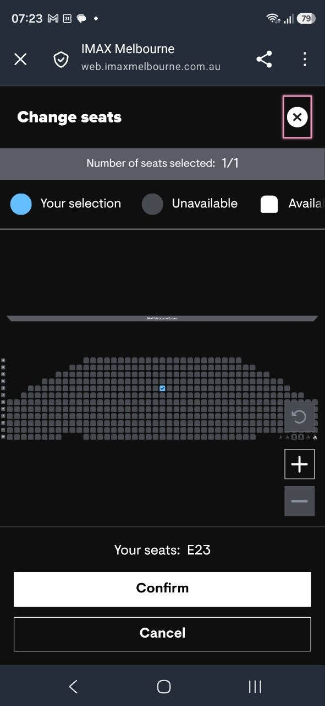

What I learned pointing a monitor at a completely sold-out cinema season: a flag that lies, seats that quietly come back, and one impossible seat in the middle of the room.
The Odyssey is screening in IMAX 70mm in Melbourne, and it is sold out. Not "limited availability" sold out — 459 of 459 seats gone, on session after session, a month deep into the schedule.
I wanted two tickets. So I did what everyone does: opened the booking page, clicked through the dates, and stared at seat maps that were entirely grey. Then did it again the next day. Then built something to do it for me, which is where this gets interesting — because the thing I built kept finding seats that I had been told did not exist.
This was the part I had wrong. I assumed a sold-out session was simply sold out — that if somebody couldn't make it, their ticket quietly evaporated into the void.
It doesn't. Returns happen. Holds expire and the seats go back on sale. Payment attempts fail and inventory returns to the pool. It happens continuously, at unpredictable times, and it is completely invisible unless you happen to be looking at that exact seat map in that exact minute.
There is no waitlist, no "email me if something opens up", no notification of any kind. There is a watchlist — and it saves the film, not the seats.
Over four days of monitoring, 43 distinct general-admission seats became available across the season. Every one of them was invisible to anyone not refreshing at that moment. Most lasted under an hour.
The booking site runs on Vista's Movie XChange platform, and every session
carries an isSoldOut boolean. It is wrong on 34 of the 77
sessions — reporting false while nothing bookable exists
on them.
That is not a rounding error, it is the difference between "there might be a ticket here" and "there is not". If you trust the flag, you open dozens of seat maps for nothing. Everything my monitor reports is counted from the seat map itself and split by seat type, because the summary field cannot be trusted.

Look at the legend on that screenshot: Your selection, Unavailable, Available. Three states, one white swatch. But "available" is quietly doing two completely different jobs.
Screen 1 has six accessibility seats — four wheelchair spaces and two companion seats. They show as available on nearly every session, because they are reserved, held for people who need them. They are not general admission and they were never mine to take.
The rest are simply seats that haven't sold. Completely different mechanism, identical rendering. So a session with "availability" often means six accessibility spaces and nothing else — which is exactly why a seat map can look empty while the site insists the session is open.
My monitor treats them separately, and only alerts on the second kind. Alerting on the first would fire every single run and mean nothing.
Once you're recording every seat rather than eyeballing them, the shape of a sold-out house becomes obvious.
Seats found free, by row. A is closest to the screen; M is the back wall.
Rows G through M — the entire back half of the auditorium — released nothing at all in four days. Not one seat. And of what did come free, four in five sat at the edge of a row.
Which reframes the screenshot above. E23 wasn't just a seat. It was one of nine centre-ish seats in the whole period, in a room where the good seats went months ago and never came back.
The booking site is a Next.js front end over a JSON API. Seat availability
turns out to be a plain authenticated GET — no sign-in, no order,
no guest checkout — returning every seat with a status of
Available, Sold or House.
| Problem | What it actually took |
|---|---|
| Auth | A 12-hour anonymous token embedded in every page. Cloudflare fingerprints TLS, so no HTTP client can fetch that page — a real browser mints it once, then plain HTTP does the rest. |
| Rate limits | Measured, not guessed: 41 requests per rolling minute, then HTTP 429 for ~45 seconds. Three concurrent requests trip a separate burst rule instantly. |
| Seat meaning | Join availability against the seat layout to recover row, number and type. Without it a seat id is just 1_5_23. |
| Running it | Every 10 minutes on a laptop. Cloud runners get served a Cloudflare challenge — it's IP reputation, so no VPS fixes it. |
Here is the design problem that made this more interesting than a scraper.
"No seats available" is the correct answer almost all the time. So a completely broken monitor and a perfectly working one produce identical output.
91 of the first 123 sweeps found nothing. If the token had expired, or the API had changed shape, or the seat ids had stopped matching the layout, I would have carried on receiving exactly the silence I expected — right up until I noticed the film had finished its run.
So the monitor is built to distinguish the two. It alerts on schema drift — an unfamiliar seat type, a layout that changed size, ids that no longer join. It alerts if too much of the schedule goes unchecked. A separate watchdog process alerts if the monitor stops running at all, because the failure it catches is the main process being dead. A single failed request, though, is logged and never alerted: cry wolf on the channel that also carries the seat alerts and you have taught yourself to ignore it.
That is the part worth stealing. Not the cinema code — the habit of asking what your monitoring looks like when it's broken, and making sure that isn't the same thing as everything being fine.
It watches. When a genuinely bookable seat appears it sends a Telegram message with the seat number and a direct link, and a human takes it from there. It does not select seats, create orders, hold inventory or buy anything.
It makes read-only requests, paced well below the limit I measured, for one person after two tickets. I don't condone or support using it — or anything like it — to bulk-grab inventory or resell. That is the opposite of the point.